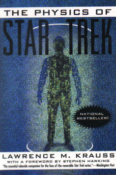

The Physics of Star Trekby Lawrence M. Krauss
publisher: Harper Perennial
Non-fiction, 174 pages | 
(book cover art, Copyright ©1995 Lawrence M. Krauss)
Used with Permission. |
Return to the Book MenuPrevious|Next
Description:
A discussion of what is and is not possible, as well as what
could be practical in the science you see on Star Trek and Star Trek: the
Next Generation.
Recommended for: Trekkies, of course!
Did-you-read questions:
Deadline: February 1, 2005.
These should be easy questions, but you should have the questions ready and keep an eye out during your reading. Each question should be answered with 1-2 sentences.
Note: these questions are not probably not the most important part of the book! Your essay will not have to cover these questions!
- How much mass of fuel is needed to accelerate the Enterprise-D to half
the speed of light, using the impulse engines?
- Is the warp drive theoretically possible?
- Is the transporter theoretically possible?
- What Star Trek material is closely tied to cold fusion?
- What does physicist Steven Weinberg consider the main mistake on Star Trek?
Report Questions:Deadline: Peer Review Session on February 8, 2005; paper due February 10, 2005.
You should write a 3 - 4 page essay on one of the following questions. Your essay should include examples and references to the book, unless otherwise specified. Page number references are sufficient for citing material from the primary book. If you use outside materials, cite your sources in full. If you would rather write on a different topic, you may, but clear it with Mr. Howe or Ms. Sullivan first.
- Does reading this book add to your enjoyment of Star Trek? Or does it take
the joy out of it by pointing out what isnít possible or making it all
too technical? Explain.
- Several times in the book, the author suggests that something is not possible,
based on what we can do now and our rates of improvements. Do you agree
with his assessment? Is this a reasonable way of deciding what is or isnít
practical?
- Star Trek is a series of shows that deal a great deal with technology and
science, some real, some fake. In fact, there are probably a great number
of people who get most of their scientific understanding almost exclusively
from shows like Star Trek. Is Star Trek doing them a service or a disservice
to these people? Justify your answer.
- Suppose we decide that the universe of Star Trek is a nice place to live
and work. Weíd like to make our future be the Star Trek future. What do
we need to do now to make that happen? Pick an area of future technology
and describe what you think we should do today to make a reality of these
fantasies.
Graphic and Presentation:
Deadline: February 21 - March 3, 2005.You will give a 10 minute presentation on both of the following:
- Convince your peers that they should (or should not) read this book. (This may include a brief summary of the book.) Give examples of what was cool or worthwhile in the book, and what you got out of it (or didn't).
- Describe a (realistic) science idea that you learned about in this book, citing information from at least 2 external sources (other than the dictionary). If you would like help choosing or understanding an idea from your book, you are invited to come talk to Mr. Howe or Ms. Sullivan.
Note: This presentation should not be just a reading of your paper!Along with this presentation, you should have a graphic that will go with it. A Power Point presentation is recommended, but if you have a special idea for a something else, such as a model, an original video presentation, or a well done drawing/ painting/ sculpture/ etc., you may do so, provided it involves a similar level of effort and polish. Speak to Mr. Howe or Ms. Sullivan first if you are considering an alternate graphic format to the Power Point.
Return to the Book MenuPrevious|Next